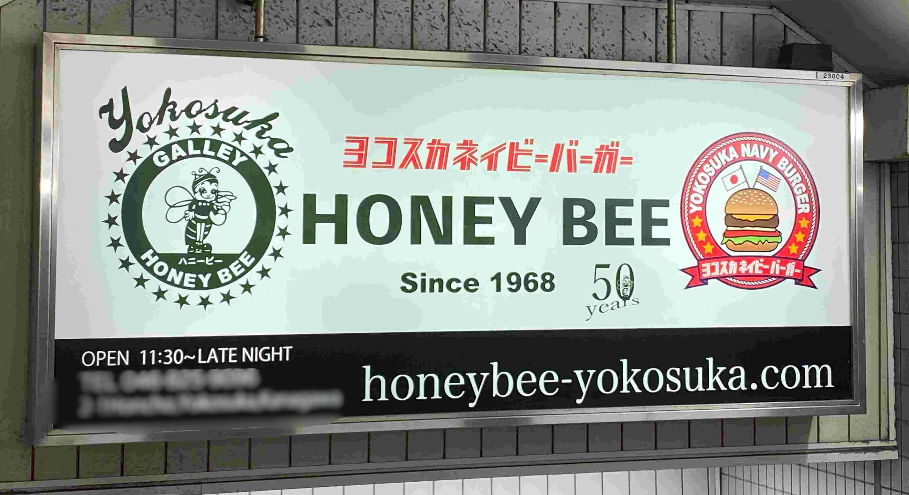
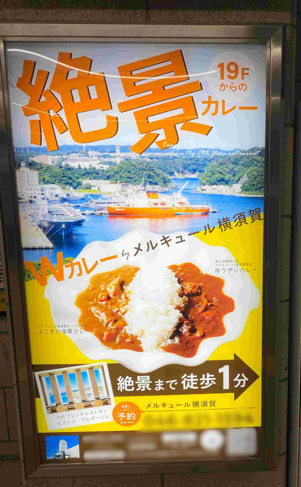

蜂のハンバーガー

１０月１１日の金曜日に最寄り駅にて自分が撮った写真
学校帰りに散策しようと駅を出る際に見つけたハンバーガー店の広告。
ハンバーガーなのに蜂がマークとして出ており、「ハンバーガーで蜂、、、？」となって違和感を感じたので撮影した。
１０月１１日の金曜日に最寄り駅にて自分が撮った写真
学校帰りに散策しようと駅を出る際に見つけたハンバーガー店の広告。
ハンバーガーなのに蜂がマークとして出ており、「ハンバーガーで蜂、、、？」となって違和感を感じたので撮影した。
メインがわからなかった広告

１０月１１日の金曜日に最寄り駅にて自分が撮った写真
学校帰りに散策しようと駅を出る際に見つけたカレー店の広告。
最初は絶景の文字の主張が強かったため近くで見るまでツアーの広告と勘違いしていた。
気づいたときに少し面白く感じたので撮影した。
１０月１１日の金曜日に最寄り駅にて自分が撮った写真
学校帰りに散策しようと駅を出る際に見つけたカレー店の広告。
最初は絶景の文字の主張が強かったため近くで見るまでツアーの広告と勘違いしていた。
気づいたときに少し面白く感じたので撮影した。
変な車止め

１０月５日に通学路で自分が撮影した写真
普段はこの道を通るときはまるで気にせずに素通りしていました。
今回のフィールドワークで散策したとき、
よく考えれば用途が全く考えられなかった純粋階段のようなもののように感じられたため写真に残しました。
※追記：出された課題と合わないことに気づいたため、一番下に変更したのちに１３日にまでに二枚分の写真を追加しました。